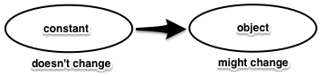

Ruby Hacking Guide
Translated by Sebastian Krause
Chapter 1: Introduction
A Minimal Introdution to Ruby
Here the Ruby prerequisites are explained, which one needs to know in order to understand the first section. I won’t point out programming techniques or points one should be careful about. So don’t think you’ll be able to write Ruby programs just because you read this chapter. Readers who have prior experience with Ruby can skip this chapter.
We will talk about grammar extensively in the second section, hence I won’t delve into the finer points of grammar here. From hash literals and such I’ll show only the most widely used notations. On principle I won’t omit things even if I can. This way the syntax becomes more simple. I won’t always say “We can omit this”.
Objects
Strings
Everything that can be manipulated in a Ruby program is an object.
There are no primitives as Java’s int and long. For instance
if we write as below it denotes a string object with content content.
"content"
I casually called it a string object but to be precise this is an expression which generates a string object. Therefore if we write it several times each time another string object is generated.
"content" "content" "content"
Here three string objects with content content are generated.
Besides, a program won’t do any good without some output. Let’s show how to print on the terminal.
p("content") # Shows "content"
Everything after an # is a comment. From now on, I’ll put the result
of an expression in a comment behind.
p(……) calls the function p. It displays arbitrary objects “as such”.
It’s basically a debugging function.
Precisely speaking, there are no functions in Ruby, but just for now we can think of it as a function.
Various Literals
Now, let’s explain some more the expressions which directly generate objects, the so-called literals. First the integers and floating point numbers.
# Integer 1 2 100 9999999999999999999999999 # Arbitrarily big integers # Float 1.0 99.999 1.3e4 # 1.3×10^4
Don’t forget that these are all expressions which generate objects. I’m repeating myself but there are no primitives in Ruby.
Below an array object is generated.
[1, 2, 3]
This program generates an array which consists of the three integers 1, 2 and 3 in that order. As the elements of an array can be arbitrary objects the following is also possible.
[1, "string", 2, ["nested", "array"]]
And finally, a hash table is generated by the expression below.
{"key"=>"value", "key2"=>"value2", "key3"=>"value3"}
A hash table is a structure which establishes a one-on-one relation between pairs of arbitrary objects. The above line creates a table which stores the following table.
"key" → "value" "key2" → "value2" "key3" → "value3"
If we ask the hash table above “What’s corresponding to key?”, it’ll
answer “That’s value.” How can we ask? We use methods.
Method Calls
We can call methods on an object. In C++ Jargon they are member functions. I don’t think it’s necessary to explain what a method is. I’ll just explain the notation.
"content".upcase()
Here the upcase method is called on a string object ( with content content).
As upcase is a method which
returns a new string with the small letters replaced by capital letters
we get the following result.
p("content".upcase()) # Shows "CONTENT"
Method calls can be chained.
"content".upcase().downcase()
Here the method downcase is called on the return value of "content".upcase().
There are no public fields (member variables) as in Java or C++ (Note: need to check this). The object interface consists of methods only.
The Program
Top Level
In Ruby we can just write expressions and it becomes a program.
One doesn’t need to define a main() as in C++ or Java.
p("content")
This is a complete Ruby program. If we put this into a file called
first.rb we can execute it from the command line as follows.
% ruby first.rb "content"
With the -e option of the ruby program we don’t even need to create a file.
% ruby -e 'p("content")'
"content"
By the way, the place where p is written is the lowest level of the program,
or the highest level from the program’s standpoint. Hence it’s called the
toplevel.
The existence of a toplevel is a characteristic trait of a scripting language.
In Ruby, one line is usually one statement. A semicolon at the end isn’t necessary. Therefore the program below is interpreted as three statements.
p("content")
p("content".upcase())
p("CONTENT".downcase())
When we execute it it looks like this.
% ruby second.rb "content" "CONTENT" "content"
Local Variables
In Ruby all variables and constants store references to objects. That’s why one can’t copy the content by assigning one variable to another variable. Think of object type variables in Java or pointers in C++. But you can’t change the value of these pointers.
In Ruby one can tell the scope of a variable by its name’s first letter. Local variables start with a small letter or an underscore. One can write an “=” for variable assignment.
str = "content" arr = [1,2,3]
An initial assignment serves as declaration, an explicit declaration is not necessary. Because variables don’t have a type we can assign any type without distinction. The program below is completely legal.
lvar = "content" lvar = [1,2,3] lvar = 1
But just because we can we shouldn’t necessarily do it. If different objects are put in one variable it tends to become difficult to read. In a real world Ruby program one doesn’t do this kind of things without a good reason. The above was just an example for the sake of it.
Variable reference has also a pretty straightforward notation.
str = "content" p(str) # Shows "content"
Now let’s look at how a variable stores a reference.
a = "content" b = a c = b
After we execute this program all three local variables a b c
point to the same object, a string object with content "content"

Figure 1: Ruby variables store references to objects
Besides, these variables are called local. Hence there should be a scope but we cannot talk about this scope without reading a bit further. Let’s say for now that the top level is one local scope.
Constants
Constants start with a capital letter. They can only be assigned once (at their creation).
Const = "content" PI = 3.1415926535 p(Const) # Shows "content"
I’d like to say that if we assign twice an error occurs. But there is just a warning, not an error. That’s because of applications which use Ruby, for instance development environments. There shouldn’t be an error when they load the same file twice. I recognize that it had to be that way for practicality but there really should be an error. Up until version 1.1 there really was an error.
C = 1 C = 2 # There is a warning but ideally there should be an error.
A lot of people are fooled by the word constant. A constant only does not switch objects once it is assigned. But the object itself might as well change. The term “read only” might capture the concept better than “constant”.
By the way, to indicate that an object itself shouldn’t be changed
another means is used: freeze.

Figure 2: constant means read only
And we cannot talk about the scope yet. We talk about it later in the context of classes.
Control Structures
Unfortunately Ruby has a wide abundance of control structures.
For the time being we pretend there are just if and while.
if i < 10 then # body end while i < 10 do # body end
Only false and nil are false in a conditional expression, all
other various objects are true. 0 or the empty string are also true of course.
By the way, it wouldn’t be wise if there were just false, there is also true.
And it is of course true.
Classes and Methods
Classes
In object orientation methods belong to objects, in a perfect world, though. But in a normal program there are a lot of objects which have the same set of methods. Usually a mechanism like classes or multimethods is used to get rid of the duplication of definitions.
In Ruby the traditional concept of classes is used to bind objects and methods together. Namely every object belongs to a class, the methods which can be called are determined by the class. Hence a method is called an instance of a class.
For example the string "str" is called an instance of the class String.
And in this class String the methods upcase, downcase, strip and
many others are defined. So it looks as if each string object has all these
methods.
# They all belong to the String class,
# hence the same methods are defined
"content".upcase()
"This is a pen.".upcase()
"chapter II".upcase()
"content".length()
"This is a pen.".length()
"chapter II".length()
By the way, what happens if the called method isn’t defined?
In a static language a compiler error occurs but in Ruby there
is a runtime exception. Let’s try it out. For this kind of programs the
-e option is handy.
% ruby -e '"str".bad_method()' -e:1: undefined method `bad_method' for "str":String (NoMethodError)
When the method isn’t found there’s apparently a NoMethodError.
Always talking about “the upcase method of String” and such is cumbersome.
Let’s introduce a special notation String#upcase refers to the method
upcase defined in the class String.
By the way, if we write String.upcase it has a completely different
meaning in the Ruby world. What could that be? I explain it in the
next paragraph.
Class Definition
Up to now we talked about already defined classes.
We can of course also define our own classes.
To define classes we use the word class.
class C end
This is the definition of a new class C. After we defined it we
can use it as follows.
class C end c = C.new() # create an instance of C and assign it to the variable c
Note that the notation for creating a new instance is not new C.
The astute reader might think:
Hmm, this C.new() really looks like a method call.
In Ruby the object generating expressions are indeed just methods.
In Ruby class names and constant names are the same. But what is
contained in a class name, where there’s a constant with the same name? It’s the class.
In Ruby all things which a program can manipulate are objects. So
of course classes are also expressed as objects. Let’s call these
class objects. Every class is an instance of the class Class.
In other words a class statement creates a new class object and
it assigns a constant named
with the classname to the class. On the other hand
the generation of an instance references this constant and calls a method
on this object ( usually new). If we look at the example below, it’s
pretty obvious that the creation of an instance doesn’t differ
from a normal method call.
S = "content" class C end S.upcase() # Get the object the constant S points to and call upcase C.new() # Get the object the constant C points to and call new
So new is not a keyword in Ruby.
And we can also use p for an instance of a created class.
class C end c = C.new() p(c) # #<C:0x2acbd7e4>
It won’t display as nicely as a string or an integer but it shows its respective class and it’s internal ID. This ID is the pointer value which points to the object.
Oh, I completely forgot but about the notation of method names:
Object.new calls the method new of the class object Object itself.
So Object#new and Object.new are completely different things, we have
to separate them strictly.
obj = Object.new() # Object.new obj.new() # Object#new
In practice a method Object#new is almost never defined so the
second line will return an error. Please keep this example in mind.
Method Definition
If we can define classes we should also be able to define methods.
Let’s define a method for our class C.
class C
def myupcase( str )
return str.upcase()
end
end
To define a method we use the word def. In this example we
defined the method myupcase. The name of the only parameter is str.
As with variables it’s not necessary to write down the type of the parameter.
And we can use any number of parameters.
Let’s use the defined method. Methods are usually called from the outside.
c = C.new()
result = c.myupcase("content")
p(result) # Shows "CONTENT"
Of course if you get used to it you don’t need to assign everything. The line below gives the same result.
p(C.new().myupcase("content")) # Also shows "CONTENT"
self
During the execution of a method the information about itself (the instance
which called the method) is saved and can be picked up in self.
Like the this in C++ or Java. Let’s check this out.
class C
def get_self()
return self
end
end
c = C.new()
p(c) # #<C:0x40274e44>
p(c.get_self()) # #<C:0x40274e44>
As we see, the exact same object is returned.
We ascertained that for the called method self is c.
How should a method against oneself be called?
It comes to mind to do this also via self.
class C
def my_p( obj )
self.real_my_p(obj) # called a method against oneself
end
def real_my_p( obj )
p(obj)
end
end
C.new().my_p(1) # Output 1
But always adding the self when calling an own method is tedious.
Hence, whenever one calls self one can omit the called object ( the receiver) by convention.
class C
def my_p( obj )
real_my_p(obj) # Calling without writing down the receiver.
end
def real_my_p( obj )
p(obj)
end
end
C.new().my_p(1) # Output 1
Instance Variables
The saying goes “Objects are data and code”. So the definition of methods alone would be useless. Objects must also be able to store data. In other words instance variables. Or in C++ jargon member variables. (Note: Check this.)
In the fashion of Ruby’s variable naming convention, the first
letter determines the variable type. For instance variables it’s
an @.
class C
def set_i(value)
@i = value
end
def get_i()
return @i
end
end
c = C.new()
c.set_i("ok")
p(c.get_i()) # Shows "ok"
Instance variables differ a bit from the variables seen before: We can reference them without assigning or defining them. To see what happens we add the following lines to the code above.
c = C.new() p(c.get_i()) # Shows nil
Calling get without set gives nil. nil is the object
which indicates “nothing”. It’s mysterious why there’s an object
where there should be nothing, but that’s just the way it is.
We can use nil like a literal as well.
p(nil) # Shows nil
initialize
As we saw before, when we call ‘new’ on a freshly defined class,
we can create an instance. That’s surely a good thing, but
sometimes we might want to have a peculiar instantiation.
In this case we don’t change method new, we change the method initialize.
When we do this it get’s called within new.
class C
def initialize()
@i = "ok"
end
def get_i()
return @i
end
end
c = C.new()
p(c.get_i()) # Shows "ok"
Strictly speaking this is the work of the new method not the
work of the language itself.
Inheritance
Classes can inherit from other classes. For instance String
inherits from Object. In this text we’’ll indicate this relation
by a vertical arrow as in Fig.3.
Figure 3: Inheritance
In the illustration the inherited class (Object) is called
superclass or superior class. The inheriting class (String) is called
subclass or inferior class. This point differs from C++ jargon, be careful.
But it’s the same as in Java.
Anyway let’s try it out. Let’s inherit for our created class from another class. To inherit from another class ( or designate a superclass) write the following.
class C < SuperClassName end
When we leave out the superclass like in the cases before the
class Object becomes tacitly the superclass.
Now, why should we want to inherit? Of course to hand over methods. Handing over means that the methods which were defined in the superclass also work in the subclass as if they were defined in there once more. Let’s check it out.
class C
def hello()
return "hello"
end
end
class Sub < C
end
sub = Sub.new()
p(sub.hello()) # Shows "hello"
hello was defined in the class C but we could call it from
the class Sub as well. Of course we don’t need to assign variables.
The above is the same as the line below.
p(Sub.new().hello())
When we define a method with the same name we overwrite a method.
In C++ and Object Pascal (Delphi) it’s only possible to overwrite
explicitly with the keyword virtual but in Ruby every method
can be overwritten unconditionally.
class C
def hello()
return "Hello"
end
end
class Sub < C
def hello()
return "Hello from Sub"
end
end
p(Sub.new().hello()) # Shows "Hello from Sub"
p(C.new().hello()) # Shows "Hello"
We can inherit over several steps. For instance as in Fig.4
Fixnum inherits every method from Object, Numeric and Integer.
When there are methods with the same name the nearer classes take
preference. As type overloading isn’t there at all the requisites are
extremely straigtforward.
Figure 4: Inheitance over multiple steps
In C++ it’s possible to create a class which inherits nothing.
While in Ruby one has to inherit from the Object class either
directly or indirectly. In other words when we draw the inheritance
relations it becomes a single tree with Object at the top.

Figure 5: Ruby’s class tree
(Note: changed in 1.9: Socket isn’t builtin anymore, might want to add
Fiber, String, Symbol)
When the superclass is appointed ( in the definition statement ) it’s not possible to change it anymore. In other words, one can add to the class tree but cannot change a position or delete a class.
Inheritance of Variables……?
In Ruby (instance) variables aren’t inherited. Even when inheriting, there’s no information what variables that class uses.
But when an inherited method is called ( in an instance of a subclass), assignment of instance variables happens. Which means they become defined. Then, since the namespace of instance variables is completely flat, it can be accessed by whichever method.
class A
def initialize() # called from when processing new()
@i = "ok"
end
end
class B < A
def print_i()
p(@i)
end
end
B.new().print_i() # Shows "ok"
If you can’t agree with this behavior let’s think more about classses
and inheritance. When there’s an instance obj of the
the class C then all the methods of the superclass of C are as if
defined in C. Of course we keep the overwrite rule in mind.
Then the methods of C get attached to the instance obj (Fig.6).
This strong palpability is a specialty of Ruby’s object orientation.

Figure 6: A conception of a Ruby object
(メソッド:method)
Modules
Only a single superclass can be designated. So Ruby looks like single inheritance. But because of modules it has in practice the same abilities as a multiple inheritance language. Let’s explain these modules next.
In short, modules are classes for which a superclass cannot be designated and instances cannot be created. For the definition we write as follows.
module M end
Here the module M was defined. Methods are defined exactly the
same way as for classes.
module M
def myupcase( str )
return str.upcase()
end
end
But because instances cannot be directly created we cannot call these directly. What can we do about it? We can use these methods by including the module into other classes. When doing so it’s as if the module inherits to the class.
module M
def myupcase( str )
return str.upcase()
end
end
class C
include M
end
p(C.new().myupcase("content")) # "CONTENT" is shown
Even though no method was defined in the class C we can call
the method myupcase. It was inherited from the module M.
Inclusion is functionally completely the same as inheritance.
There’s no limit on the access of methods and instance variables.
A superclass cannot be assigned to a module, but other modules can be included.
module M end module M2 include M end
In other words it’s functionally the same as appointing a superclass. But a class cannot come above a module. Only modules are allowed above modules.
The example below also contains the inheritance of methods.
module OneMore
def method_OneMore()
p("OneMore")
end
end
module M
include OneMore
def method_M()
p("M")
end
end
class C
include M
end
C.new().method_M() # Output "M"
C.new().method_OneMore() # Output "OneMore"
As with classes when we sketch inheritance it looks like Fig.7

Figure 7: multilevel inheritance
Besides, the class C also has a superclass. What might be its
relationship with the included modules. For instance we could write
as follows.
# modcls.rb
class Cls
def test()
return "class"
end
end
module Mod
def test()
return "module"
end
end
class C < Cls
include Mod
end
p(B.new().test()) # "class"? "module"?
C inherits from Cls and includes Mod. What will be shown?
"class" or "module"? In other words which one is closer?
The superclass or the module?
We can ask Ruby about Ruby:
% ruby modcls.rb "module"
Apparently a module takes preference before the superclass.
Broadly speaking, in Ruby an included module inherits by going in between the class and the superclass. As a picture it might look like Fig.8.

Figure 8: The relation between modules and classes
And modules included in modules look like Fig.9

Figure 9: The relation between modules and classes(2)
(SomeClassのスーパークラス:superclass of SomeClass)
The Program revisited
Caution. Now I explain an extremely important element which is probably hard to get used to for programmers who have only used static languages before. You can skip the rest but please read this carefully. I’ll explain this also in relative depth.
Nesting of Constants
First a repetition of constants. As a constant begins with a capital letter the definition goes as follows.
Const = 3
Now we reference the constant in this way.
p(Const) # Shows 3
Actually we can also write this.
p(::Const) # Shows 3 in the same way.
The :: in front shows that it’s a constant defined at the top level.
You can think of the path in a filesystem. Assume there is a file vmunix
at rootlevel. Being at / one can write vmunix to access the file. One
can also write /vmunix. It’s the same with Const and ::Const.
At top level it’s okay to write only Const or to write the full path ::Const
And what corresponds to a filesystem’s directories in Ruby? That should be class and module definition statements. However mentioning both is cumbersome, so I’ll just subsume them under class definition. When one enters a class definition the level for constants rises ( as if entering a directory).
class SomeClass Const = 3 end p(::SomeClass::Const) # Shows 3 p( SomeClass::Const) # The same. Shows 3
SomeClass is defined at toplevel. Hence one can reference it by writing
either SomeClass or ::SomeClass. And in class is the constant
Const. It becomes ::SomeClass::Const.
A class inside a class is like a directory in a directory. For instance like this:
class C # ::C
class C2 # ::C::C2
class C3 # ::C::C2::C3
end
end
end
Is it always necessary to reference a constant inside a class by its
full name? Of course not. As with the filesystem, if one is inside the
same class definition one can skip the ::. It becomes like that:
class SomeClass Const = 3 p(Const) # Shows 3. end
“What?” you might think. Why’s the code inside a class definition executed? People who are used to only static languages will find this quite exceptional. I was also flabbergasted the first time I saw it.
Let’s add that we can of course also view a constant inside a method. The reference rules are the same as within the class definition (outside the method).
class C
Const = "ok"
def test()
p(Const)
end
end
C.new().test() # Shows "ok"
Everything is executed
Looking at the big picture I want to write one more thing. In Ruby almost the whole program is executed. Constant definitions, class definitions and method definitions and the rest is executed in the apparent order.
Look for instance at the following code. I used various constructions which haven’t been used before.
1: p("first")
2:
3: class C < Object
4: Const = "in C"
5:
6: p(Const)
7:
8: def myupcase(str)
9: return str.upcase()
10: end
11: end
12:
13: p(C.new().myupcase("content"))
This program is executed in the following order:
1: p("first") |
Shows "first" |
3: < Object |
The constant Object is referenced and the class object Object is gained |
3: class C |
A new class object with superclass Object is generated, and assigned to the constant C |
4: Const = "in C" |
Assigning the value "in C" to the constant ::C::Const |
6: p(Const) |
Showing the constant ::C::Const hence "in C" |
8: def myupcase(...)...end |
Define C#myupcase |
13: C.new().myupcase(...) |
Refer the constant C, call the method new on it, and then myupcase on the return value |
9: return str.upcase() |
Returns "CONTENT" |
13: p(...) |
Shows "CONTENT" |
The Scope of Local Variables
At last we can talk about the scope of local variables.
The toplevel, the interior of a class definition, the interior of a module definition and a method body are all
scopes for independent local variables. In other words in the following program all variables
lvar are different. There’s no connection between them.
lvar = 'toplevel'
class C
lvar = 'in C'
def method()
lvar = 'in C#method'
end
end
p(lvar) # Shows "toplevel"
module M
lvar = 'in M'
end
p(lvar) # Shows "toplevel"
self as context
I said before, that oneself is self during method execution.
That’s true but only half true. It’s really so that during execution
self is always set up. So also at toplevel and also in a class definition.
For instance the self at the toplevel is main. It’s an instance
of the Object class, as might be expected. main is provided
to set up self for the time being. There’s no deeper meaning attached
to it.
Hence the toplevel’s self i.e. main is an instance of Object,
such that one can call the methods of Object there. And in Object
the module Kernel is included. In there the function type methods
like p and puts are defined (Fig.10). That’s why one can
call puts and p also at the toplevel.

Figure 10: main, Object and Kernel
(トップレベル:toplevel)
Thus p isn’t a function, it’s a method. It’s just
defined in Kernel and thus can be called from everywhere. Or no matter what self is,
p is a method of self and can be called.
That’s why there aren’t really functions in Ruby. There are only methods.
By the way, besides p and puts there are the function type
methods print, puts, printf, sprintf, gets, fork, and exec
and many more with somewhat familiar names. When you look at the choice
of names you might imagine Ruby’s character.
I mentioned that self is set up everywhere, so it should also
be in a class definition. There it is the class ( class object)
itself. Hence we get this.
class C p(self) # C end
What should this be good for? Let’s look at a much more useful example.
module M end class C include M end
This include is a method call to the class object C.
I haven’t mentioned it yet but the parentheses around arguments
can be omitted for method calls. And I omitted the parantheses
around include such that it doesn’t look like a method call, which might
have been confusing without knowing the whole story.
Loading Libraries
In Ruby the loading of libraries also happens at runtime. Normally one writes this.
require("library_name")
The impression isn’t false, require is a method. It’s not even
a reserved word. When one writes that line the loaded library will be
executed where the line is written. As there is no concept like Java packages in Ruby,
one has to use files and directories to separate the namespace.
require("somelib/file1")
require("somelib/file2")
And in the library file there are usually class and module statements. The toplevel constant scope is independent of the file, so one can see at once classes which where defined in another file. To partition the namespace of class names one has to explicitly nest modules as shown below.
# example of the namespace partion of the net library
module Net
class SMTP
# ...
end
class POP
# ...
end
class HTTP
# ...
end
end
More about Classes
Constants revisited
Up to now we used the filesystem metaphor for the scope of constants, but I want you to completely forget that.
There is more about constants. Firstly one can also see constants outside the class.
Const = "ok" class C p(Const) # Shows "ok" end
This becomes useful, when modules are used as namespaces. Let’s explain this by looking at the net library from before.
module Net
class SMTP
# Uses Net::SMTPHelper in the methods
end
class SMTPHelper # Supports the class Net::SMTP
end
end
In this case it’s convenient to just refer to SMTPHelper
from within SMTP. That’s the reason why it’s convenient to
be able to see outside a class.
The outer class can be referenced over several levels. When the same name is defined on different levels, the one which will first be found from within will be referred to.
Const = "far"
class C
Const = "near" # This one is closer than the one above
class C2
class C3
p(Const) # "near" is shown
end
end
end
There’s another way of searching constants. If the toplevel is reached when going further and further outside then the own superclass is searched for the constant.
class A Const = "ok" end class B < A p(Const) # "ok" is shown end
Really, that’s pretty complicated.
Let’s summarize. When looking up a constant, first the outer class is searched then the superclass. This is quite contrived, but let’s assume a class hierarchy as follows.
class A1
end
class A2 < A1
end
class A3 < A2
class B1
end
class B2 < B1
end
class B3 < B2
class C1
end
class C2 < C1
end
class C3 < C2
p(Const)
end
end
end
When the constant Const in C3 is referenced, it’s looked
up in the order depicted in
Fig.11.

Figure 11: Search order for constants
Be careful about one point. The superclasses of the classes outside,
for instance A1 and B2, aren’t searched at all.
If it’s outside once it’s always outside and if it’s superclass once
it’s always superclass. If it weren’t so the number of classes would
become to big and the behavior would become unpredictable.
Metaclasses
We said, that one can call methods on objects. We also said that the methods which we can call are determined by the object’s class. Then shouldn’t there be a class for class objects? (Fig.12)

Figure 12: A class of classes?
For this we can check Ruby.
The method which returns the class of oneself is Object#class
p("string".class()) # String is shown
p(String.class()) # Class is shown
p(Object.class()) # Class is shown
String belongs to the class Class. Then what’s the class of Class?
p(Class.class()) # Class is shown
Again Class. In other words if one applies to any class
.class().class().class() long enough one reaches Class.
There the loop will stall. (Fig.13)

Figure 13: The class of the class of the class…
Class is the class of classes. And whenever there is a
recursive structure from the form X of Xs we call it a meta-X.
Hence Class is a metaclass.
Metaobjects
Let’s change the subject and talk about modules. As modules are also objects, there also should be a class for them. Let’s see.
module M end p(M.class()) # Module is shown
The class of a module seems to be Module. And what should be
the class of the class Module?
p(Module.class()) # Class
It’s again Class
Now we change the direction and examine the inheritance relationships.
What’s the superclass of Class and Module?
We can find it out with Ruby’s Class#superclass.
p(Class.superclass()) # Module p(Module.superclass()) # Object p(Object.superclass()) # nil
So Class is a subclass of Module.
A diagram of the important Ruby classes is in Fig.14.

Figure 14: The class relationship between the important Ruby classes
Up to now we used new and include without an explanation of
their true form. new is really a method defined for the class Class.
That’s why new can be used in any class because it’s an instance
of Class. But new isn’t defined in Module. Hence it’s not
possible to create instances in a module. And include is defined
in the Module class. It can be called on modules and classes.
These three classes Object, Module and class are the centerpiece
of Ruby’s object world, they describe it. They are objects
describing objects. So Object, Module and Class are Ruby’s
metaobjects.
Singleton Methods
Methods can be called on objects. We said that the callable methods are determined by the object’s class. But we also said that ideally, methods should belong to the object. Classes are a means to eliminate the effort of defining the same method more than once.
In Ruby there’s also a means to define methods for individual objects. One writes this.
obj = Object.new()
def obj.my_first()
puts("My first singleton method")
end
obj.my_first() # Shows My first singleton method
As you already know Object is the root for every class.
One sholdn’t add a weird method like my_first to such an important
class. And obj is an instance of Object. However the method my_first
can be called from obj. Hence we have created without doubt
a method which has nothing to do with the class the object belongs to.
These methods which are defined for each object individually are
called singleton methods.
When are singleton methods used? They are used in place of Java or C++ static methods. In other words methods which can be used without creating an instance. These methods are expressed in Ruby as singleton methods of a class object.
For example in UNIX there’s a system call unlink. This command
deletes a file entry from the filesystem. In Ruby it can be used
directly as the singleton method unlink from the File class.
Let’s try it out.
File.unlink("core") # deletes the coredump
It’s cumbersome to say “the singleton method unlink
of the object File”. We simply write File.unlink. Don’t mix
it up and write File#unlink, or vice versa don’t write File.write
for the method write defined in File.
▼ A summary of the method notation
| notation | called on object | example |
File.unlink |
the Fileclass itself |
File.unlink("core") |
File#write |
an instance of File |
f.write("str") |
Class Variables
Class variables were added to Ruby from 1.6 on, they are a relatively new mechanism.
They can be referenced and assigned from both the class and its instances.
Let’s look at an example. The beginning of the name is @@.
class C
@@cvar = "ok"
p(@@cvar) # "ok" is shown
def print_cvar()
p(@@cvar)
end
end
C.new().print_cvar() # "ok" is shown
As the first assignment serves as the definition, a reference before an assignment leads to an error. This is shown below. There is an ´@´ in front but the behavior differs completely from instance variables.
% ruby -e ' class C @@cvar end ' -e:3: uninitialized class variable @@cvar in C (NameError)
Here I was a bit lazy and used the -e option. The program is the three lines between the single quotes.
Class variables are inherited. Or saying it differently, a variable in a superior class can be assigned and referenced in the inferior class.
class A
@@cvar = "ok"
end
class B < A
p(@@cvar) # Shows "ok"
def print_cvar()
p(@@cvar)
end
end
B.new().print_cvar() # Shows "ok"
Global Variables
At last there are also global variables. They can be referenced from
everywhere and assigned everywhere. The first letter of the name is a $.
$gvar = "global variable" p($gvar) # Shows "global variable"
As with instance variables all kinds of names are considered defined
for global variables.
In other words a reference before an assignment gives a nil and
doesn’t raise an error.
Copyright © 2002-2004 Minero Aoki, All rights reserved.
English Translation: Sebastian Krause <skra@pantolog.de>